- Define temperature.
- Convert temperatures between the Celsius, Fahrenheit, and Kelvin scales.
- Define thermal equilibrium.
- State the zeroth law of thermodynamics.
The concept of temperature has evolved from the common concepts of hot and cold. Human perception of what feels hot or cold is a relative one. For example, if you place one hand in hot water and the other in cold water, and then place both hands in tepid water, the tepid water will feel cool to the hand that was in hot water, and warm to the one that was in cold water. The scientific definition of temperature is less ambiguous than your senses of hot and cold.Temperatureis operationally defined to be what we measure with a thermometer. (Many physical quantities are defined solely in terms of how they are measured. We shall see later how temperature is related to the kinetic energies of atoms and molecules, a more physical explanation.) Two accurate thermometers, one placed in hot water and the other in cold water, will show the hot water to have a higher temperature. If they are then placed in the tepid water, both will give identical readings (within measurement uncertainties). In this section, we discuss temperature, its measurement by thermometers, and its relationship to thermal equilibrium. Again, temperature is the quantity measured by a thermometer.
Misconception Alert: Human Perception vs. Reality
On a cold winter morning, the wood on a porch feels warmer than the metal of your bike. The wood and bicycle are in thermal equilibrium with the outside air, and are thus the same temperature. Theyfeeldifferent because of the difference in the way that they conduct heat away from your skin. The metal conducts heat away from your body faster than the wood does (see more about conductivity inConduction). This is just one example demonstrating that the human sense of hot and cold is not determined by temperature alone.
Another factor that affects our perception of temperature is humidity. Most people feel much hotter on hot, humid days than on hot, dry days. This is because on humid days, sweat does not evaporate from the skin as efficiently as it does on dry days. It is the evaporation of sweat (or water from a sprinkler or pool) that cools us off.
Any physical property that depends on temperature, and whose response to temperature is reproducible, can be used as the basis of a thermometer. Because many physical properties depend on temperature, the variety of thermometers is remarkable. For example, volume increases with temperature for most substances. This property is the basis for the common alcohol thermometer, the old mercury thermometer, and the bimetallic strip (Figure). Other properties used to measure temperature include electrical resistance and color, as shown inFigure, and the emission of infrared radiation, as shown inFigure.
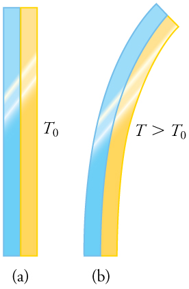
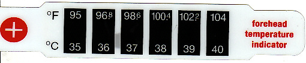
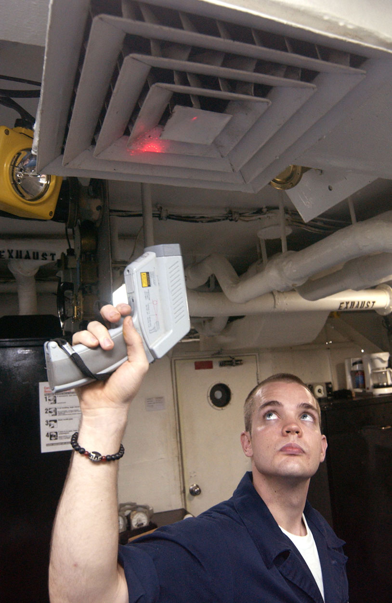
Thermometers are used to measure temperature according to well-defined scales of measurement, which use pre-defined reference points to help compare quantities. The three most common temperature scales are the Fahrenheit, Celsius, and Kelvin scales. A temperature scale can be created by identifying two easily reproducible temperatures. The freezing and boiling temperatures of water at standard atmospheric pressure are commonly used.
TheCelsiusscale (which replaced the slightly differentcentigradescale) has the freezing point of water at \(0^o \, C\) and the boiling point at \(100^o \, C\). Its unit is thedegree Celsius\((^oC)\). On theFahrenheitscale (still the most frequently used in the United States), the freezing point of water is at \(37^o \, F\) and the boiling point is at \(212^o \, F\). The unit of temperature on this scale is thedegree Fahrenheit \((^oF)\).Note that a temperature difference of one degree Celsius is greater than a temperature difference of one degree Fahrenheit. Only 100 Celsius degrees span the same range as 180 Fahrenheit degrees, thus one degree on the Celsius scale is 1.8 times larger than one degree on the Fahrenheit scale \(180/100 = 9/5\).
TheKelvinscale is the temperature scale that is commonly used in science. It is anabsolute temperaturescale defined to have 0 K at the lowest possible temperature, calledabsolute zero. The official temperature unit on this scale is thekelvin, which is abbreviated K, and is not accompanied by a degree sign. The freezing and boiling points of water are 273.15 K and 373.15 K, respectively. Thus, the magnitude of temperature differences is the same in units of kelvins and degrees Celsius. Unlike other temperature scales, the Kelvin scale is an absolute scale. It is used extensively in scientific work because a number of physical quantities, such as the volume of an ideal gas, are directly related to absolute temperature. The kelvin is the SI unit used in scientific work.
![Three temperature scales—Fahrenheit, Celsius, and Kelvin—are oriented horizontally, one below the other, and aligned to show how they relate to each other. Absolute zero is at negative four hundred fifty nine point six seven degrees F, negative two hundred seventy three point one five degrees C, and 0 K. Water freezes at thirty two degrees F, 0 degrees C, and two hundred seventy three point one five K. Water boils at two hundred twelve degrees F, one hundred degrees C, and three hundred seventy three point one five K. A temperature difference of 9 degrees F is the same as a temperature difference of 5 degrees C and 5 K.](images/ch13/fig13-6-three-temperature-scalesfahrenheit-celsi.jpg)
The relationships between the three common temperature scales is shown inFigure. Temperatures on these scales can be converted using the equations inTable.
| To convert from . . . | Use this equation . . . | Also written as . . . |
|---|---|---|
| Celsius to Fahrenheit | \(T(^oF) = \frac{9}{5}T(C^o) +32\) | \(T_{^oF} = \frac{9}{5}T_{^oC} +32\) |
| Fahrenheit to Celsius | \(T(^oC) = \frac{9}{5}(T(F^o) -32)\) | \(T_{^oC} = \frac{5}{9}(T_{^oF} - 32)\) |
| Celsius to Kelvin | \(T(K) = T(^oC) + 273.15\) | \(T_K = T_{^oC} + 273.15\) |
| Kelvin to Celsius | \(T^oC) = T(K) - 273.15\) | \(T_{^oC} = T_K - 273.15\) |
| Fahrenheit to Kelvin | \(T(K) = \frac{5}{9}(T(^oF) - 32) + 273.15\) | \(T_K = \frac{5}{9}(T_{^oF} - 32) + 273.15\) |
| Kelvin to Fahrenheit | \(T(^oF) = \frac{9}{5}(T(K) - 273.15) + 32\) | \(T_{^oF} = \frac{9}{5}(T_K - 273.15) + 32\) |
Celsius to Fahrenheit
Fahrenheit to Celsius
Notice that the conversions between Fahrenheit and Kelvin look quite complicated. In fact, they are simple combinations of the conversions between Fahrenheit and Celsius, and the conversions between Celsius and Kelvin.
“Room temperature” is generally defined to be \(25^oC\) (a) What is room temperature in \(^oF\)? (b) What is it in K?
To answer these questions, all we need to do is choose the correct conversion equations and plug in the known values.
1. Choose the right equation. To convert from \(^oC\) to \(^oF\), use this equation
2. Plug the known value into the equation and solve:
1. Choose the right equation. To convert from \(^oC\) to \(K\), use this equation
2. Plug the known value into the equation and solve:
The Reaumur scale is a temperature scale that was used widely in Europe in the 18th and 19th centuries. On the Reaumur temperature scale, the freezing point of water is \(0^oR\) and the boiling temperature is \(80^oR\). If “room temperature” is \(25^oC\)
on the Celsius scale, what is it on the Reaumur scale?
To answer this question, we must compare the Reaumur scale to the Celsius scale. The difference between the freezing point and boiling point of water on the Reaumur scale is \(80^oR.\) On the Celsius scale it is \(100^oC\). Therefore \(100^oC = 80^oR\). Both scales start at \(0^o\) for freezing, so we can derive a simple formula to convert between temperatures on the two scales.
1. Derive a formula to convert from one scale to the other:
2. Plug the known value into the equation and solve:
Figureshows the wide range of temperatures found in the universe. Human beings have been known to survive with body temperatures within a small range, from \(24^oC\) to \(44^oC \, (75^oF\) to \(111^oF)\). The average normal body temperature is usually given as \(37.0^oC \, (98.6^oF)\), and variations in this temperature can indicate a medical condition: a fever, an infection, a tumor, or circulatory problems (seeFigure).
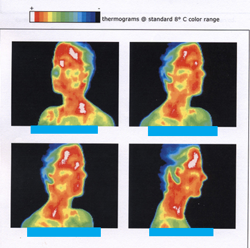
The lowest temperatures ever recorded have been measured during laboratory experiments: \(4.5 \times 10^{-10} K\) at the Massachusetts Institute of Technology (USA), and \(1.0 \times 10^{-10} K\) at Helsinki University of Technology (Finland). In comparison, the coldest recorded place on Earth’s surface is Vostok, Antarctica at 183 K \((-89^oC)\) and the coldest place (outside the lab) known in the universe is the Boomerang Nebula, with a temperature of 1 K.
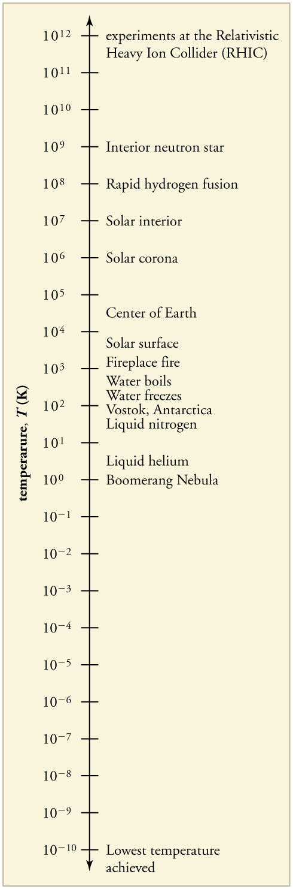
Making Connections: Absolute Zero
What is absolute zero? Absolute zero is the temperature at which all molecular motion has ceased. The concept of absolute zero arises from the behavior of gases.Figureshows how the pressure of gases at a constant volume decreases as temperature decreases. Various scientists have noted that the pressures of gases extrapolate to zero at the same temperature, \(-273.15^oC.\) This extrapolation implies that there is a lowest temperature. This temperature is calledabsolute zero. Today we know that most gases first liquefy and then freeze, and it is not actually possible to reach absolute zero. The numerical value of absolute zero temperature is \(-273.15^oC\) or 0K.
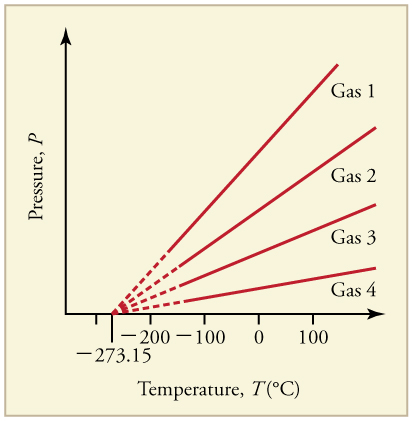
Thermometers actually take theirowntemperature, not the temperature of the object they are measuring. This raises the question of how we can be certain that a thermometer measures the temperature of the object with which it is in contact. It is based on the fact that any two systems placed inthermal contact(meaning heat transfer can occur between them) will reach the same temperature. That is, heat will flow from the hotter object to the cooler one until they have exactly the same temperature. The objects are then inthermal equilibrium, and no further changes will occur. The systems interact and change because their temperatures differ, and the changes stop once their temperatures are the same. Thus, if enough time is allowed for this transfer of heat to run its course, the temperature a thermometer registersdoesrepresent the system with which it is in thermal equilibrium. Thermal equilibrium is established when two bodies are in contact with each other and can freely exchange energy.
Furthermore, experimentation has shown that if two systems, A and B, are in thermal equilibrium with each another, and B is in thermal equilibrium with a third system C, then A is also in thermal equilibrium with C. This conclusion may seem obvious, because all three have the same temperature, but it is basic to thermodynamics. It is called thezerothlaw of thermodynamics.
The Zeroth Law of Thermodynamics
If two systems, A and B, are in thermal equilibrium with each other, and B is in thermal equilibrium with a third system, C, then A is also in thermal equilibrium with C.
This law was postulated in the 1930s, after the first and second laws of thermodynamics had been developed and named. It is called thezeroth lawbecause it comes logically before the first and second laws (discussed inThermodynamics). An example of this law in action is seen in babies in incubators: babies in incubators normally have very few clothes on, so to an observer they look as if they may not be warm enough. However, the temperature of the air, the cot, and the baby is the same, because they are in thermal equilibrium, which is accomplished by maintaining air temperature to keep the baby comfortable.
Check Your Understanding
Does the temperature of a body depend on its size
No, the system can be divided into smaller parts each of which is at the same temperature. We say that the temperature is anintensivequantity. Intensive quantities are independent of size.
📖 OpenStax College Physics, Section 13.01. openstax.org · CC BY 4.0
- Define and describe thermal expansion.
- Calculate the linear expansion of an object given its initial length, change in temperature, and coefficient of linear expansion.
- Calculate the volume expansion of an object given its initial volume, change in temperature, and coefficient of volume expansion.
- Calculate thermal stress on an object given its original volume, temperature change, volume change, and bulk modulus.
The expansion of alcohol in a thermometer is one of many commonly encountered examples ofthermal expansion, the change in size or volume of a given mass with temperature. Hot air rises because its volume increases, which causes the hot air’s density to be smaller than the density of surrounding air, causing a buoyant (upward) force on the hot air. The same happens in all liquids and gases, driving natural heat transfer upwards in homes, oceans, and weather systems. Solids also undergo thermal expansion. Railroad tracks and bridges, for example, have expansion joints to allow them to freely expand and contract with temperature changes.
What are the basic properties of thermal expansion? First, thermal expansion is clearly related to temperature change. The greater the temperature change, the more a bimetallic strip will bend. Second, it depends on the material. In a thermometer, for example, the expansion of alcohol is much greater than the expansion of the glass containing it.
What is the underlying cause of thermal expansion? As is discussed inKinetic Theory: Atomic and Molecular Explanation of Pressure and Temperature, an increase in temperature implies an increase in the kinetic energy of the individual atoms. In a solid, unlike in a gas, the atoms or molecules are closely packed together, but their kinetic energy (in the form of small, rapid vibrations) pushes neighboring atoms or molecules apart from each other. This neighbor-to-neighbor pushing results in a slightly greater distance, on average, between neighbors, and adds up to a larger size for the whole body. For most substances under ordinary conditions, there is no preferred direction, and an increase in temperature will increase the solid’s size by a certain fraction in each dimension.
Linear Thermal Expansion—Thermal Expansion in One Dimension
The change in length \(\Delta L\) is proportional to length \(L\). The dependence of thermal expansion on temperature, substance, and length is summarized in the equation
where \(\Delta L\) is the change in length \(L\), \(\Delta T\) is the change in temperature, and \(\alpha\) is thecoefficient of linear expansion, which varies slightly with temperature.
Table lists representative values of the coefficient of linear expansion, which may have units of \(1/^oC\) or 1/K. Because the size of a kelvin and a degree Celsius are the same, both \(\alpha\) and \(\Delta T\) can be expressed in units of kelvins or degrees Celsius. The equation \(\Delta L = \alpha L \Delta T\) is accurate for small changes in temperature and can be used for large changes in temperature if an average value of \(\alpha\) is used.
| Material | Coefficient of linear expansion (\(\alpha (1/^oC)\)) | Coefficient of volume expansion (\(\beta (1/^oC)\)) |
|---|---|---|
| Solids | ||
| Aluminum | \(25 \times 10^{-6}\) | \(75 \times 10^{-6}\) |
| Brass | \(19 \times 10^{-6}\) | \(56 \times 10^{-6}\) |
| Copper | \(17 \times 10^{-6}\) | \(51 \times 10^{-6}\) |
| Gold | \(14 \times 10^{-6}\) | \(42 \times 10^{-6}\) |
| Iron or Steel | \(12 \times 10^{-6}\) | \(35 \times 10^{-6}\) |
| Invar (Nickel-Iron alloy) | \(0.9 \times 10^{-6}\) | \(2.7 \times 10^{-6}\) |
| Lead | \(29 \times 10^{-6}\) | \(87 \times 10^{-6}\) |
| Silver | \(18 \times 10^{-6}\) | \(54 \times 10^{-6}\) |
| Glass (ordinary) | \(9 \times 10^{-6}\) | \(27 \times 10^{-6}\) |
| Glass (Pyrex) | \(3 \times 10^{-6}\) | \(9 \times 10^{-6}\) |
| Quartz | \(0.4 \times 10^{-6}\) | \(1 \times 10^{-6}\) |
| Concrete, Brick | \(\approx 12 \times 10^{-6}\) | \(\approx 36 \times 10^{-6}\) |
| Marble (average) | \(7 \times 10^{-6}\) | |
| Liquids | ||
| Ether | N/A | \(1650 \times 10^{-6}\) |
| Ethyl alcohol | N/A | \(1100 \times 10^{-6}\) |
| Petrol | N/A | \(950 \times 10^{-6}\) |
| Glycerin | N/A | \(500 \times 10^{-6}\) |
| Mercury | N/A | \(180 \times 10^{-6}\) |
| Water | N/A | \(210 \times 10^{-6}\) |
| Gases | ||
| Air and most other gases at atm | N/A | \(3400 \times 10^{-6}\) |
The main span of San Francisco’s Golden Gate Bridge is 1275 m long at its coldest. The bridge is exposed to temperatures ranging from \(-15^oC\) to \(40^oC\). What is its change in length between these temperatures? Assume that the bridge is made entirely of steel.
Use the equation for linear thermal expansion (Equation \ref{linear}) to calculate the change in length, \(\Delta L\). Use the coefficient of linear expansion, \(\alpha\), for steel from Table , and note that the change in temperature, \(\Delta T\), is \(55^oC\).
Plug all of the known values into the equation to solve for \(\Delta L\).
Although not large compared with the length of the bridge, this change in length is observable. It is generally spread over many expansion joints so that the expansion at each joint is small.
Objects expand in all dimensions, as illustrated in Figure . That is, their areas and volumes, as well as their lengths, increase with temperature. Holes also get larger with temperature. If you cut a hole in a metal plate, the remaining material will expand exactly as it would if the plug was still in place. The plug would get bigger, and so the hole must get bigger too. (Think of the ring of neighboring atoms or molecules on the wall of the hole as pushing each other farther apart as temperature increases. Obviously, the ring of neighbors must get slightly larger, so the hole gets slightly larger).
Thermal Expansion in Two Dimensions
For small temperature changes, the change in area \(\Delta A\) is given by
where \(\Delta A\) is the change in area \(A\), \(\Delta T\) is the change in temperature, and \(\alpha\) is the coefficient of linear expansion, which varies slightly with temperature.
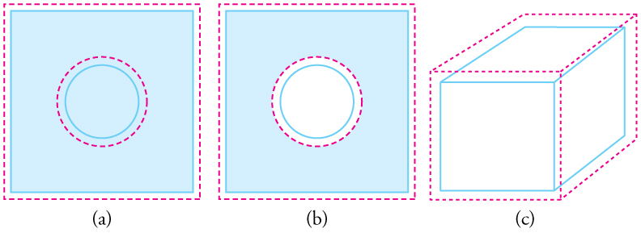
Thermal Expansion in Three Dimensions
The change in volume \(\Delta V\) is very nearly \(\Delta V = 3\alpha V \Delta T\). This equation is usually written as
where \(\beta\) is thecoefficient of volume expansionand \(\beta \approx 3\alpha\). Note that the values of \(\beta\) in Table are almost exactly equal to \(3\alpha\).
In general, objects will expand with increasing temperature. Water is the most important exception to this rule. Water expands with increasing temperature (its densitydecreases) when it is at temperatures greater than \(4^oC(40^oF)\). However, it expands withdecreasingtemperature when it is between \(+4^oC\) and \(0^oC(40^oF\) to \(32^oF)\). Water is densest at \(+4^oC\) (Figure . Perhaps the most striking effect of this phenomenon is the freezing of water in a pond. When water near the surface cools down to \(4^oC\) it is denser than the remaining water and thus will sink to the bottom. This “turnover” results in a layer of warmer water near the surface, which is then cooled. Eventually the pond has a uniform temperature of \(4^oC\). If the temperature in the surface layer drops below \(4^oC\), the water is less dense than the water below, and thus stays near the top. As a result, the pond surface can completely freeze over. The ice on top of liquid water provides an insulating layer from winter’s harsh exterior air temperatures. Fish and other aquatic life can survive in \(4^oC\) water beneath ice, due to this unusual characteristic of water. It also produces circulation of water in the pond that is necessary for a healthy ecosystem of the body of water.
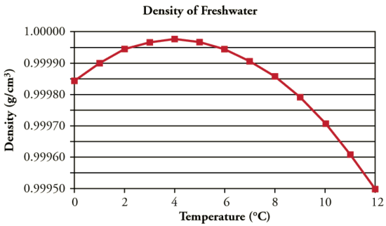
Real-World Connections - Filling the Tank
Differences in the thermal expansion of materials can lead to interesting effects at the gas station. One example is the dripping of gasoline from a freshly filled tank on a hot day. Gasoline starts out at the temperature of the ground under the gas station, which is cooler than the air temperature above. The gasoline cools the steel tank when it is filled. Both gasoline and steel tank expand as they warm to air temperature, but gasoline expands much more than steel, and so it may overflow.
This difference in expansion can also cause problems when interpreting the gasoline gauge. The actual amount (mass) of gasoline left in the tank when the gauge hits “empty” is a lot less in the summer than in the winter. The gasoline has the same volume as it does in the winter when the “add fuel” light goes on, but because the gasoline has expanded, there is less mass. If you are used to getting another 40 miles on “empty” in the winter, beware—you will probably run out much more quickly in the summer.
Suppose your 60.0-L (15.9-gal) steel gasoline tank is full of gas, so both the tank and the gasoline have a temperature of \(15^oC\). How much gasoline has spilled by the time they warm to \(35.0^oC\)?
The tank and gasoline increase in volume, but the gasoline increases more, so the amount spilled is the difference in their volume changes. (The gasoline tank can be treated as solid steel.) We can use the equation for volume expansion to calculate the change in volume of the gasoline and of the tank.
1. Use the equation for volume expansion (Equation \ref{volume}) to calculate the increase in volume of the steel tank:
2. The increase in volume of the gasoline is given by this equation:
3. Find the difference in volume to determine the amount spilled as
Alternatively, we can combine these three equations into a single equation. (Note that the original volumes are equal.)
This amount is significant, particularly for a 60.0-L tank. The effect is so striking because the gasoline and steel expand quickly. The rate of change in thermal properties is discussed inHeat and Heat Transfer Methods.
If you try to cap the tank tightly to prevent overflow, you will find that it leaks anyway, either around the cap or by bursting the tank. Tightly constricting the expanding gas is equivalent to compressing it, and both liquids and solids resist being compressed with extremely large forces. To avoid rupturing rigid containers, these containers have air gaps, which allow them to expand and contract without stressing them.
Thermal stressis created by thermal expansion or contraction (seeElasticity: Stress and Strainfor a discussion of stress and strain). Thermal stress can be destructive, such as when expanding gasoline ruptures a tank. It can also be useful, for example, when two parts are joined together by heating one in manufacturing, then slipping it over the other and allowing the combination to cool. Thermal stress can explain many phenomena, such as the weathering of rocks and pavement by the expansion of ice when it freezes.
What pressure would be created in the gasoline tank considered in Example , if the gasoline increases in temperature from \(15.0^oC\) to \(35.0^oC\) without being allowed to expand? Assume that the bulk modulus \(B\) for gasoline is \(1.00 \times 10^9 \, N/m^2\). (For more on bulk modulus, seeElasticity: Stress and Strain.)
To solve this problem, we must use the following equation, which relates a change in volume \(\Delta V\) to pressure:
where \(F/A\) is pressure, \(V_0\) is the original volume, and \(B\) is the bulk modulus of the material involved. We will use the amount spilled in Example as the change in volume, \(\Delta V\).
1. Rearrange the equation for calculating pressure: \[P = \dfrac{F}{A} = \dfrac{\Delta V}{V_0}B. \nonumber\]
2. Insert the known values. The bulk modulus for gasoline is \(B = 1.00 \times 10^9 \, N/m^2\). In the previous example, the change in volume \(\Delta V = 1.10 \, L\) is the amount that would spill. Here, \(V_0 = 60.0 \, L\) is the original volume of the gasoline. Substituting these values into the equation, we obtain
This pressure is about \(2500 \, lb/in^2\),muchmore than a gasoline tank can handle.
Forces and pressures created by thermal stress are typically as great as that in the example above. Railroad tracks and roadways can buckle on hot days if they lack sufficient expansion joints. (Figure . Power lines sag more in the summer than in the winter, and will snap in cold weather if there is insufficient slack. Cracks open and close in plaster walls as a house warms and cools. Glass cooking pans will crack if cooled rapidly or unevenly, because of differential contraction and the stresses it creates. (Pyrex is less susceptible because of its small coefficient of thermal expansion.) Nuclear reactor pressure vessels are threatened by overly rapid cooling, and although none have failed, several have been cooled faster than considered desirable. Biological cells are ruptured when foods are frozen, detracting from their taste. Repeated thawing and freezing accentuate the damage. Even the oceans can be affected. A significant portion of the rise in sea level that is resulting from global warming is due to the thermal expansion of sea water.
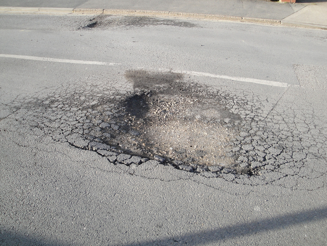
Metal is regularly used in the human body for hip and knee implants. Most implants need to be replaced over time because, among other things, metal does not bond with bone. Researchers are trying to find better metal coatings that would allow metal-to-bone bonding. One challenge is to find a coating that has an expansion coefficient similar to that of metal. If the expansion coefficients are too different, the thermal stresses during the manufacturing process lead to cracks at the coating-metal interface.
Another example of thermal stress is found in the mouth. Dental fillings can expand differently from tooth enamel. It can give pain when eating ice cream or having a hot drink. Cracks might occur in the filling. Metal fillings (gold, silver, etc.) are being replaced by composite fillings (porcelain), which have smaller coefficients of expansion, and are closer to those of teeth.
Exercise
Two blocks, A and B, are made of the same material. Block A has dimensions \(l \times w \times h = L \times 2L \times L\) and Block B has dimensions \(2L \times 2L \times 2L\). If the temperature changes, what is
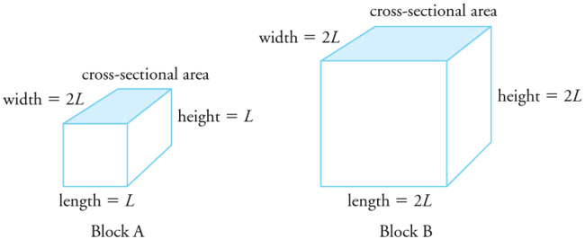
The change in volume is proportional to the original volume. Block A has a volume of \(L \times 2L \times L = 2L^3\). Block B has a volume of \(2L \times 2L \times 2L = 8L^3\),
which is 4 times that of Block A. Thus the change in volume of Block B should be 4 times the change in volume of Block A.
The change in area is proportional to the area. The cross-sectional area of Block A is \(L \times 2L = 2L^2\), while that of Block B is \(2L \times 2L = 4L^2\).
Because cross-sectional area of Block B is twice that of Block A, the change in the cross-sectional area of Block B is twice that of Block A.
The change in height is proportional to the original height. Because the original height of Block B is twice that of A, the change in the height of Block B is twice that of Block A.
📖 OpenStax College Physics, Section 13.02. openstax.org · CC BY 4.0
- State the ideal gas law in terms of molecules and in terms of moles.
- Use the ideal gas law to calculate pressure change, temperature change, volume change, or the number of molecules or moles in a given volume.
- Use Avogadro’s number to convert between number of molecules and number of moles.
In this section, we continue to explore the thermal behavior of gases. In particular, we examine the characteristics of atoms and molecules that compose gases. (Most gases, for example nitrogen, \(N_2\) and oxygen, \(O_2\) are composed of two or more atoms. We will primarily use the term “molecule” in discussing a gas because the term can also be applied to monatomic gases, such as helium.)
Gases are easily compressed. We can see evidence of thiselsewhere, where you will note that gases have thelargestcoefficients of volume expansion. The large coefficients mean that gases expand and contract very rapidly with temperature changes. In addition, you will note that most gases expand at the same rate, or have the same \( \beta\). This raises the question as to why gases should all act in nearly the same way, when liquids and solids have widely varying expansion rates.
The answer lies in the large separation of atoms and molecules in gases, compared to their sizes, as illustrated in Figure . Because atoms and molecules have large separations, forces between them can be ignored, except when they collide with each other during collisions. The motion of atoms and molecules (at temperatures well above the boiling temperature) is fast, such that the gas occupies all of the accessible volume and the expansion of gases is rapid. In contrast, in liquids and solids, atoms and molecules are closer together and are quite sensitive to the forces between them.
To get some idea of how pressure, temperature, and volume of a gas are related to one another, consider what happens when you pump air into an initially deflated tire. The tire’s volume first increases in direct proportion to the amount of air injected, without much increase in the tire pressure. Once the tire has expanded to nearly its full size, the walls limit volume expansion. If we continue to pump air into it, the pressure increases. The pressure will further increase when the car is driven and the tires move. Most manufacturers specify optimal tire pressure for cold tires (Figure .
![The figure has three parts, each part showing a pair of tires, and each tire connected to a pressure gauge. Each pair of tires represents the before and after images of a single tire, along with a change in pressure in that tire. In part a, the tire pressure is initially zero. After some air is added, represented by an arrow labeled Add air, the pressure rises to slightly above zero. In part b, the tire pressure is initially at the half-way mark. After some air is added, represented by an arrow labeled Add air, the pressure rises to the three-fourths mark. In part c, the tire pressure is initially at the three-fourths mark. After the temperature is raised, represented by an arrow labeled Increase temperature, the pressure rises to nearly the full mark.](images/ch13/fig13-18-the-figure-has-three-parts-each-part-sho.jpg)
At room temperatures, collisions between atoms and molecules can be ignored. In this case, the gas is called an ideal gas, in which case the relationship between the pressure, volume, and temperature is given by the equation of state called the ideal gas law.
Definition: Ideal Gas Law
Theideal gas lawstates that
where \(P\) is the absolute pressure of a gas, \(V\) is the volume it occupies, \(N\) is the number of atoms and molecules in the gas, and and \(T\) is its absolute temperature. The constant \(k\) is called theBoltzmann constantdiscussed below.
Definition:Boltzmann constant
TheBoltzmann constant\(k\) is named in honor of Austrian physicist Ludwig Boltzmann (1844–1906) and has the value
The ideal gas law can be derived from basic principles, but was originally deduced from experimental measurements ofCharles’ law(that volume occupied by a gas is proportional to temperature at a fixed pressure) and fromBoyle’s law(that for a fixed temperature, the product \(PV\) is a constant). In the ideal gas model, the volume occupied by its atoms and molecules is a negligible fraction of \(V\). The ideal gas law describes the behavior of real gases under most conditions. (Note, for example, that \(N\) is the total number of atoms and molecules, independent of the type of gas.)
Let us see how the ideal gas law is consistent with the behavior of filling the tire when it is pumped slowly and the temperature is constant. At first, the pressure \(P\) is essentially equal to atmospheric pressure, and the volume \(V\) increases in direct proportion to the number of atoms and molecules \(N\) put into the tire. Once the volume of the tire is constant, Equation \ref{igl} predicts that the pressure should increase in proportion tothe number N of atoms and molecules.
Suppose your bicycle tire is fully inflated, with an absolute pressure of \(7.00 \times 10^5 \, Pa\) (a gauge pressure of just under \(90.0 \, lb/in^2\)) at a temperature of \(18.0^oC\). What is the pressure after its temperature has risen to \(35.0^oC\)? Assume that there are no appreciable leaks or changes in volume.
The pressure in the tire is changing only because of changes in temperature. First we need to identify what we know and what we want to know, and then identify an equation to solve for the unknown.
We know the initial pressure \(P_0 = 7.00 \times 10^5 \, Pa\), the initial temperature \(T_0 = 18.0^oC\), and the final temperature \(T_F = 35.0^oC\). We must find the final pressure \(P_f\). How can we use Equation \ref{igl}? At first, it may seem that not enough information is given, because the volume \(V\) and number of atoms \(N\) are not specified. What we can do is use the equation twice:
If we divide \(P_fV_f\) by \(P_0V_0\), we can come up with an equation that allows us to solve for \(P_f\)
Since the volume is constant, \(V_f\) and \(V_0\) are the same and they cancel out. The same is true for \(N_f\) and \(N_0\), and \(k\), which is a constant. Therefore,
We can then rearrange this to solve for \(P_f\):
where the temperature must be in units of kelvins, because \(T_0\) and \(T_f\) are absolute temperatures.
1. Convert temperatures from Celsius to Kelvin.
2. Substitute the known values into Equation \ref{ex1a}.
The final temperature is about 6% greater than the original temperature, so the final pressure is about 6% greater as well. Note thatabsolutepressure andabsolutetemperature must be used in the ideal gas law.
Take-Home Experiment - Refrigerating a Balloon
The Inflate a balloon at room temperature. Leave the inflated balloon in the refrigerator overnight. What happens to the balloon, and why?
We left a balloon in a the freezer for a bit then I pulled it out to see what would happen
How many molecules are in a typical object, such as gas in a tire or water in a drink? We can use the ideal gas law (Equation \ref{igl}) to give us an idea of how large \(N\) typically is.
Calculate the number of molecules in a cubic meter of gas at standard temperature and pressure (STP), which is defined to be \(0^oC\) and atmospheric pressure.
Because pressure, volume, and temperature are all specified, we can use the ideal gas law (Equation \ref{igl}) to find \(N\).
1. Identify the knowns.
2. Identify the unknown: number of molecules, \(N\).
3. Rearrange the ideal gas law to solve for \(N\).
This number is undeniably large, considering that a gas is mostly empty space. \(N\) is huge, even in small volumes. For example, \(1\, cm^3\) of a gas at STP has \(2.68 \times 10^{10}\) molecules in it. Once again, note that \(N\) is the same for all types or mixtures of gases.
It is sometimes convenient to work with a unit other than molecules when measuring the amount of substance. Amole(abbreviated mol) is defined to be the amount of a substance that contains as many atoms or molecules as there are atoms in exactly 12 grams (0.012 kg) of carbon-12. The actual number of atoms or molecules in one mole is calledAvogadro’s number\((N_A)\),in recognition of Italian scientist Amedeo Avogadro (1776–1856). He developed the concept of the mole, based on the hypothesis that equal volumes of gas, at the same pressure and temperature, contain equal numbers of molecules. That is, the number is independent of the type of gas. This hypothesis has been confirmed with an estimate of the value of Avogadro’s number.
Definition: Avogadro’s Number
One mole always contains \(6.02 \times 10^{23}\) particles (atoms or molecules), independent of the element or substance. A mole of any substance has a mass in grams equal to its molecular mass, which can be calculated from the atomic masses given in the periodic table of elements.
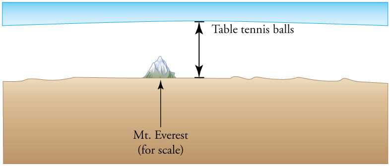
Exercise
We first need to calculate the molar mass (the mass of one mole) of acetaminophen. To do this, we need to multiply the number of atoms of each element by the element’s atomic mass.
(8 moles of Carbon)(12 grams/mole) + (9 moles hydrogen)(1 gram/mole) + (1 mole of nitrogen)(14 grams/mole) + (2 moles oxygen)(16 grams/mole) = 151 grams.
Then we need to calculate the number of moles in 325 mg.
Then use Avogadro’s number to calculate the number of molecules.
Strategy and Solution
(a) We are asked to find the number of moles per cubic meter, and we know fromExamplethat the number of molecules per cubic meter at STP is \(2.68 \times 10^{25}\). The number of moles can be found by dividing the number of molecules by Avogadro’s number. We let \(n\) stand for the number of moles,
(b) Using the value obtained for the number of moles in a cubic meter, and converting cubic meters to liters, we obtain
This value is very close to the accepted value of 22.4 L/mol. The slight difference is due to rounding errors caused by using three-digit input. Again this number is the same for all gases. In other words, it is independent of the gas.
The (average) molar weight of air (approximately 80% \(N_2\) and 20% \(O_2\) is \(M = 28.8 \, g\). Thus the mass of one cubic meter of air is 1.28 kg. If a living room has dimensions \(5 \, m \times 5 \, m \times 3 \, m\), the mass of air inside the room is 96 kg, which is the typical mass of a human.
Exercise
The density of air at standard conditions \((P = 1 \, atm\) and \(T = 20^oC)\) is \(1.28 \, kg/m^3\). At what pressure is the density \(0.64 \, kg/m^3\) if the temperature and number of molecules are kept constant?
The best way to approach this question is to think about what is happening. If the density drops to half its original value and no molecules are lost, then the volume must double. If we look at the equation \(PV = NkT\), we see that when the temperature is constant, the pressure is inversely proportional to volume. Therefore, if the volume doubles, the pressure must drop to half its original value, and \(P_f = 0.50 \, atm\).
A very common expression of the ideal gas law uses the number of moles, \(n\), rather than the number of atoms and molecules (\(N\)). We start from the ideal gas law, \[PV = NkT,\] and multiply and divide the equation by Avogadro’s number \(N_A\). This gives
Note that \(n = N/N_A\) is the number of moles. We define the universal gas constant \(R = N_Ak\), and obtain the ideal gas law in terms of moles.
Definition: Ideal Gas Law (in terms of moles)
The ideal gas law (in terms of moles) is
where \(P\) is the absolute pressure of a gas, \(V\) is the volume it occupies, \(n\) is the number of moles of atoms and molecules in the gas, and and \(T\) is its absolute temperature. The constant \(R\) is called the gas constant and varies depending on the units of the pressure and volume used.
Definition: Gas Constant
The numerical value of \(R\) in SI units is
You can use whichever value of \(R\) is most convenient for a particular problem.
How many moles of gas are in a bike tire with a volume of \(2.00 \times 10^{-3} \,m^3(2.00 \, L)\), a pressure of \(7.00 \times 10^5 \, Pa\) (a gauge pressure of just under \(90.0 \, lb/in^2\)), and at a temperature of \(18.0^oC\)?
Identify the knowns and unknowns, and choose an equation to solve for the unknown. In this case, we solve the ideal gas law (Equation \ref{iglmoles}) for the number of moles \(n\).
1. Identify the knowns.
2. Rearrange Equation \ref{iglmoles} to solve for \(n\) and substitute known values.
The most convenient choice for \(R\) in this case is \(8.31 \, J/mol \cdot K\), because our known quantities are in SI units. The pressure and temperature are obtained from the initial conditions in Example , but we would get the same answer if we used the final values.
The ideal gas law can be considered to be another manifestation of theLaw of Conservation of Energy. Work done on a gas results in an increase in its energy, increasing pressure and/or temperature, or decreasing volume. This increased energy can also be viewed as increased internal kinetic energy, given the gas’s atoms and molecules.
Let us now examine the role of energy in the behavior of gases. When you inflate a bike tire by hand, you do work by repeatedly exerting a force through a distance. This energy goes into increasing the pressure of air inside the tire and increasing the temperature of the pump and the air.
The ideal gas law is closely related to energy: the units on both sides are joules. The right-hand side of the ideal gas law in \(PV = NkT\) is \(NkT\). This term is roughly the amount of translational kinetic energy of \(N\) atoms or molecules at an absolute temperature \(T\), as we shall see formally inKinetic Theory: Atomic and Molecular Explanation of Pressure and Temperature. The left-hand side of the ideal gas law is \(PV\) which also has the units of joules. We know from our study of fluids that pressure is one type of potential energy per unit volume, so pressure multiplied by volume is energy. The important point is that there is energy in a gas related to both its pressure and its volume. The energy can be changed when the gas is doing work as it expands—something we explore inHeat and Heat Transfer Methods—similar to what occurs in gasoline or steam engines and turbines.
Problem-Solving Strategy: The Ideal Gas Law
Exercise
Liquids and solids have densities about 1000 times greater than gases. Explain how this implies that the distances between atoms and molecules in gases are about 10 times greater than the size of their atoms and molecules.
Atoms and molecules are close together in solids and liquids. In gases they are separated by empty space. Thus gases have lower densities than liquids and solids. Density is mass per unit volume, and volume is related to the size of a body (such as a sphere) cubed. So if the distance between atoms and molecules increases by a factor of 10, then the volume occupied increases by a factor of 1000, and the density decreases by a factor of 1000.
📖 OpenStax College Physics, Section 13.03. openstax.org · CC BY 4.0
| Section | Title |
|---|---|
| 13.01 | 13.1: Temperature |
| 13.02 | 13.2: Thermal Expansion of Solids and Liquids |
| 13.03 | 13.3: The Ideal Gas Law |